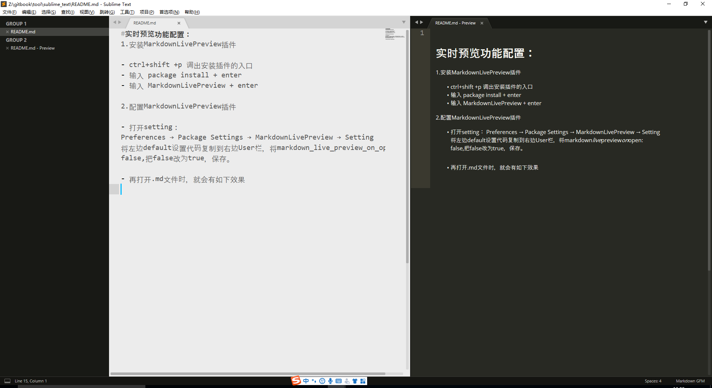

实时预览功能配置：
1.安装MarkdownLivePreview插件
- ctrl+shift +p 调出安装插件的入口
- 输入 package install + enter
- 输入 MarkdownLivePreview + enter
2.配置MarkdownLivePreview插件
打开setting： Preferences → Package Settings → MarkdownLivePreview → Setting 将左边default设置代码复制到右边User栏，将markdown_live_preview_on_open: false,把false改为true，保存。
再打开.md文件时，就会有如下效果

3.安装 Markdown editing插件(用于markdown编译)
- ctrl+shift +p 调出安装插件的入口
- 输入 package install + enter
- 输入 Markdown editing + enter